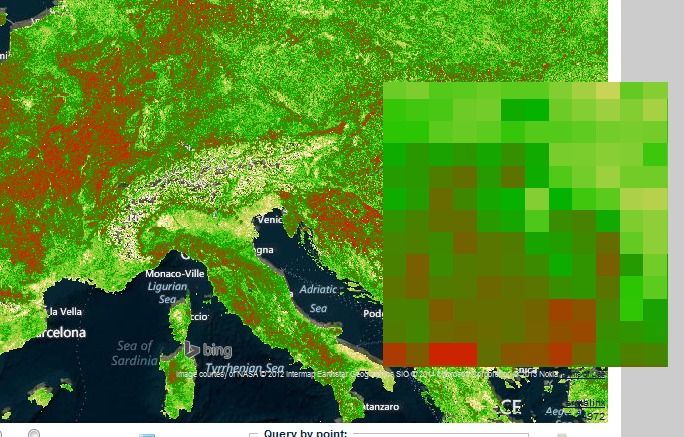

Description of the Map Viewer
Map viewer: Data selection
Select a valid value from the first "Climate Indicator" list: all available datasets will be loaded automatically into the "Dataset" list as shown in the example ("Evapotranspiration") below:

Choose a valid dataset to be displayed into the map. For certain datasets a "Scenario" list will automatically loaded, enabling different scenarios for the dataset to be specified: select a valid value to display over the map.
Example of dataset layer:
All layers may be separated into "Observations" (i.e. all layers refer to the state of being observed) and "Future Projections" (i.e. all layers refer to the state of being projected).
- Observations, all layers refer to the state of being observed;
- Projections, all layers refer to the state of being projected;
Select the year and period, to change the loaded dataset: This dataset will be added into the "Table of Contents" with a green shade, as shown in the example.

Click on the icon to open a pop-up list of all available datasets:
Select a dataset or alternatively, type a value to search for a specific dataset: a list matching the search criteria will be loaded as shown below:

Top
Map Viewer: Raster data
A raster dataset consists of a matrix of cells (pixels) organized into rows and columns (a grid) where each cell contains a value representing information (e.g. temperature). Common raster datasets are digital aerial photos, imagery from satellites, digital pictures, or even scanned maps.
Example of raster dataset:

Top
Map Viewer: Shapefiles
Shapefiles are datasets that use a simple format for storing the geometric location and attribute information of geographic features. Geographic features in a shapefile can be represented by points, lines, or polygons (areas). The workspace may also contain dBASE tables, which can store additional attributes that can be joined to a shapefile's features.
Example of shapefile:

Spatial selections as "Query by Point" and "Query by Box" are disabled with this kind of datasets:
Top
Map Viewer: Table of contents
All loaded datasets will automatically added into the "Table of Contents" section as shown below::

For each layer, click on:
 to delete the selected dataset from your list.
to delete the selected dataset from your list. to open a webpage on the dataset's metadata.
to open a webpage on the dataset's metadata.
Use the "drag and drop functionality" to change the order of datasets.
Top
Map viewer: Metadata link
Below is an example of a metadata web-page that is associated with a dataset:
All metadata datasets are INSPIRE compliant. More info about INSPIRE can be found here.
- Access constraints
- Access constraints applied to assure the protection of privacy or intellectual
property, and any special restrictions or limitations on obtaining the
resource
- Abstract
- Brief narrative summary of the content of the resource(s)
- Administrative area
- State, province of the location
- Temporal extent - Begin date
- Formatted as 2007-09-12T15:00:00 (YYYY-MM-DDTHH:mm:ss)
- Character set
- Full name of the character coding standard used for the metadataset
- Grid spatial representation - Cell geometry
- Identification of grid data as point or cell
- City
- City of the location
- Reference System Info - Code
- Alphanumeric value identifying an instance in the namespace
- Country
- Country of the physical address
- Data quality info
- Provides overall assessment of quality of a resource(s)
- Date
- Reference date and event used to describe it (YYYY-MM-DD)
- Date stamp
- Date that the metadata was created (YYYY-MM-DDThh:mm:ss)
- Date type
- Event used for reference date
- Delivery point
- Address line for the location (as described in ISO 11180, annex A)
- Equivalent scale - Denominator
- The number below the line in a vulgar fraction
- Data Quality - Description
- Description of the event, including related parameters or tolerances
- OnLine resource - Description
- Detailed text description of what the online resource is/does
- Descriptive keywords
- Provides category keywords, their type, and reference source
- Grid spatial representation - Dimension name
- Name of the axis i.e. row, column
- Grid spatial representation - Dimension size
- Number of elements along the axis
- Dimension size Resolution
- Number of elements along the axis
- Distribution info
- Provides information about the distributor of and options for obtaining the
resource(s)
- Geographic bounding box - East bound longitude
- Eastern-most coordinate of the limit of the dataset extent, expressed in
longitude in decimal degrees (positive east)
- Edition
- Version of the cited resource
- Electronic mail address
- Address of the electronic mailbox of the responsible organisation or individual
- Temporal extent - End date
- Formatted as 2007-09-12T15:00:00 (YYYY-MM-DDTHH:mm:ss)
- Equivalent scale
- Level of detail expressed as the scale of a comparable hardcopy map or
chart
- Extent
- Information about spatial, vertical, and temporal extent
- Facsimile
- Telephone number of a facsimile machine for the responsible organisation or
individual
- File identifier
- Unique identifier for this metadata file
- Vector spatial representation - Geometric object type
- Name of point and vector spatial objects used to locate zero-, one-and
two-dimensional spatial locations in the dataset
- Vector spatial representation - Geometric object count
- Total number of the point or vector object type occurring in the dataset
- Geographic bounding box
- Geographic position of the dataset
- Grid spatial representation
- Information about grid spatial objects in the dataset
- Grid spatial representation - Resolution value
- Degree of detail in the grid dataset
- Grid spatial representation - Transformation parameter availability
- Indication of whether or not parameters for transformation exists
- Data Quality - Hierarchy level
- Hierarchical level of the data specified by the scope
- Identification info
- Basic information about the resource(s) to which the metadata applies
- Point of Contact - Individual name
- Name of the responsible person- surname, given name, title separated by a
delimiter
- Keyword
- Commonly used word(s) or formalised word(s) or phrase(s) used to describe the
subject
- Data Language
- Language used for documenting data
- Metadata - Language
- Language used for documenting metadata
- Data Quality - Lineage
- Non-quantitative quality information about the lineage of the data specified by
the scope. Mandatory if report not provided
- OnLine resource - Linkage
- Location (address) for on-line access using a Uniform Resource Locator address or
similar addressing scheme such as http://www.statkart.no/isotc211
- Maintenance and update frequency
- Frequency with which changes and additions are made to the resource after the
initial resource is completed
- Metadata author
- Party responsible for the metadata information
- Metadata standard name
- Name of the metadata standard (including profile name) used
- Metadata standard version
- Version (profile) of the metadata standard used
- OnLine resource - Name
- Name of the online resource
- Geographic bounding box - North bound latitude
- Northern-most, coordinate of the limit of the dataset extent expressed in latitude
in decimal degrees (positive north)
- Grid spatial representation - Number of dimensions
- Number of independent spatial-temporal axes
- Distribution Info - OnLine resource
- Information about online sources from which the resource can be obtained
- Point of Contact - Organisation name
- Name of the responsible organisation
- Other constraints
- Other restrictions and legal prerequisites for accessing and using the
resource
- Point of contact
- Identification of, and means of communication with, person(s) and organisations(s)
associated with the resource(s)
- Point of contact - Position name
- Role or position of the responsible person
- Postal code
- ZIP or other postal code
- Presentation form
- Mode in which the resource is represented
- OnLine resource - Protocol
- Connection protocol to be used
- Purpose
- Summary of the intentions with which the resource(s) was developed
- Reference system info
- Description of the spatial and temporal reference systems used in the
datasetData
- Data Quality - Report
- Quantitative quality information for the data specified by the scope. Mandatory if
lineage not provided
- Grid spatial representation - Resolution value
- Degree of detail in the grid dataset
- Point of contact - Role
- Function performed by the responsible party
- Geographic bounding box - South bound latitude
- Southern-most coordinate of the limit of the dataset extent, expressed in latitude
in decimal degrees (positive north)
- Spatial representation info
- Digital representation of spatial information in the dataset
- Spatial representation type
- Method used to spatially represent geographic information
- Data Quality - Statement
- General explanation of the data producer’s knowledge about the lineage of a
dataset
- Status
- Status of the resource(s)
- Supplemental Information
- Any other descriptive information about the dataset
- Temporal Extent
- Time period covered by the content of the dataset
- Title
- Name by which the cited resource is known
- Topic category code
- High-level geographic data thematic classification to assist in the grouping and
search of available geographic datasets. Can be used to group keywords as well.
Listed examples are not exhaustive. NOTE It is understood there are overlaps between
general categories and the user is encouraged to select the one most
appropriate.
- Grid spatial representation - Transformation parameter availability
- Indication of whether or not parameters for transformation exists
- Vector spatial representation - Topology level
- Code which identifies the degree of complexity of the spatial relationships
- Type
- Subject matter used to group similar keywords
- URL
- Unified Resource Locator
- Use constraints
- Constraints applied to assure the protection of privacy or intellectual property,
and any special restrictions or limitations or warnings on using the resource
- Vector spatial representation
- Information about the vector spatial objects in the dataset
- Voice
- Telephone number by which individuals can speak to the responsible organisation or
individual
- Geographic bounding box - West bound longitude
- Western-most coordinate of the limit of the dataset extent, expressed in longitude
in decimal degrees (positive east)
More info about "Geo Network" tool can be found here.
Top
Map Viewer: Map functionalities
The interface uses Bing maps based on a "Spherical Mercator projection", as shown in the following figure:

Click on to navigate through the map: move the mouse cursor over the map and
Click on to navigate through the map: move the cursor over the map and (a) left-click and move over the map, (b) scroll the mouse to zoom in and out on the map, and (c) use the provided icon (below) to zoom in and out over the map.
To open a new page with a full-page Map Viewer, click on  in the right-top corner of the Map Viewer.
in the right-top corner of the Map Viewer.